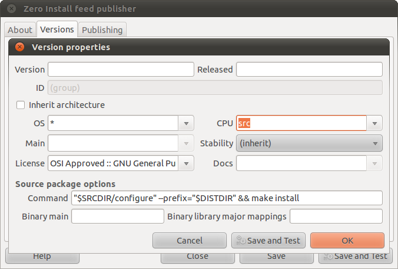

0compile: Developers¶
This page explains how to publish source code using Zero Install. Publishing source this way means that:
- Users can compile it easily using 0compile.
- Build dependencies, such as header files and build tools, can be downloaded automatically.
- 0release can automatically compile binaries for your software during the release process.
Making source available¶
There are two common situations:
- You already have a source tarball somewhere and you want to publish an XML feed saying how to download and compile it (ideally, no changes should be needed to support 0install). For this, you should first read the Guide to packaging binaries.
- You have a development checkout (e.g. a Git clone or similar) and you want to say how to compile it. For this, you should first read the page about local feeds.
To make source code available for others to use you need to add source implementations to the program's feed file. This is almost exactly the same as adding binaries, except that you give src as the machine (CPU) type:

(if you want to script this process, take a look at 0template)
You can also edit the XML directly, which gives more control. A minimal source implementation might look like this:
<implementation arch="*-src" id="." version="0.1-pre">
<command name='compile' path='Makefile'>
<runner interface='https://apps.0install.net/devel/make.xml'>
<arg>-f</arg>
</runner>
</command>
</implementation>
Note
You only need to use arch='*-src' to publish implementations for things that need to be compiled. Shell scripts, etc should not be marked as source code; use arch="*-*" instead (which is the default anyway if arch is not given). For header files (-dev packages), there will often be a source implementation that generates the header files, but the resulting headers are not source (and will often be architecture-specific, e.g. Linux-i386).
The job of the compile command is to call the actual build system. It is executed inside the build directory ($BUILDDIR). It must compile the source in $SRCDIR, putting the final result (ready for distribution) in $DISTDIR. The path to the generated feed for the new binary is $BINARYFEED, if you need it during the build.
Instead of giving a <runner>, you may prefer to use a shell command. This is useful if you need to run more than one command. However, if the command starts to get complicated, you should move it to a script, either inside the main source archive or in a separate dependency, and just set this attribute to the command to run the script):
<implementation arch="*-src" id="." version="0.1-pre">
<command name='compile'
shell-command='"$SRCDIR/configure" --prefix="$DISTDIR" && make install'/>
<requires interface='https://apps.0install.net/devel/make.xml'>
<executable-in-path name='make'/>
</requires>
</implementation>
Starting with 0compile 1.1, this even works on Windows (it uses win-bash).
There are also some extra attributes you can add to the implementation element:
compile:binary-main- Deprecated. Use
<compile:implementation>instead (see below). compile:dup-src- Some programs insist on creating files in their source directory, which is typically a read-only directory when using Zero Install. In this case, set
compile:dup-src='../img/true'and 0compile will copy everything in$SRCDIRintobuildbefore building. compile:binary-lib-mappings(binary library major mappings)- This is needed if you want to use 0install to compile a
-devpackage (containing header files) that works with a distribution-provided runtime package; see MakeHeaders for details.
Customising the binary implementation¶
You can specify a template <implementation> for the binary using <compile:implementation>. You can use this, for example, to add <command> elements to it. Here's a more complex example for a Java program:
... xmlns:compile="http://zero-install.sourceforge.net/2006/namespaces/0compile" ...
<implementation arch="*-src" id="." version="0.1-pre">
<command name="compile" path="src/Makefile">
<runner interface='https://apps.0install.net/devel/make.xml'>
<arg>-f</arg>
</runner>
<compile:implementation arch='*-*'>
<environment name='CLASSPATH' insert='.'/>
<requires interface="https://apps.0install.net/utils/graphviz.xml"/>
<command name='run'>
<runner interface='https://apps.0install.net/java/jre.xml'/>
<arg>com.example.MainClass</arg>
</command>
</compile:implementation>
</command>
<requires interface="https://apps.0install.net/java/iris.xml" compile:include-binary='true'/>
<requires interface="https://apps.0install.net/java/jdk.xml">
<environment name='PATH' insert='bin'/>
</requires>
</implementation>
The interesting bits here are:
arch="*-src"- tells us that the root
<implementation>describes some source code. <compile:implementation>- this is the template for the implementation that will be created by the compile.
arch='*-*'- indicates that the generated binary is platform independent (Java bytecode).
<command name='run'>- says how to run the resulting binary (by using the Java runtime).
The dependencies are:
graphvizandopenjdk-jre- only used at run-time (since they occur inside the
<compile:implementation>). openjdk-jdk- only used at compile-time (occurs directly inside the source
<implementation>). iris- used at compile-time and at run-time (has
compile:include-binaryattribute).
Finally, there is a compile:if-0install-version attribute that you can place on any element in the template. 0compile will convert this to a plain if-0install-version in the generated output (you can't use if-0install-version directly because 0install would strip them out as appropriate for its version before 0compile saw them).
Pinning version ranges¶
Sometimes, you have a build time dependency with a wide range of possible versions, but the generated binary will have a runtime dependency on whichever version was used to compile it. The compile:pin-components attribute on a <version> element in the template will expand into before and after attributes that require the binary version to match the first n components of the version used to compile it. For example, if this program is compiled using Python 2.7.3, then the binary will have <version not-before='2.7' before='2.8'/>:
<compile:implementation>
<runner interface='https://apps.0install.net/python/python.xml'>
<version compile:pin-components="2"/>
</runner>
</compile:implementation>
(added in 0compile 1.4)
Tips¶
Using a separate source feed¶
You can keep the source implementations in a separate file (MyProg-src.xml) and add a feed from the main feed, e.g.:
<feed src='http://mysite/interfaces/MyProg-src.xml' arch='*-src'/>
The arch attribute lets the injector know that it doesn't need to fetch this file unless it's looking for source code.
Making library headers available (-dev packages)¶
See Make-headers for information about publishing library source and -dev packages.
Python distutils¶
You should use the --build-base option to make distutils build to 0compile's build directory, not under the source code (which is read-only). Unfortunately, this option isn't available with the install command, so you have to do the build in two steps. A typical command is:
cd "$SRCDIR" &&
python setup.py build --build-base="$BUILDDIR/build" &&
cd "$BUILDDIR" &&
python "$SRCDIR"/setup.py install --home="$DISTDIR" --skip-build
Examples¶
There are some template projects which can be used as a starting point for publishing your own software for various languages and build systems.
Further reading¶
- Example: SCons
- This example shows how to compile a simple "Hello world" program using the SCons build system. Both the source and SCons are fetched using Zero Install.